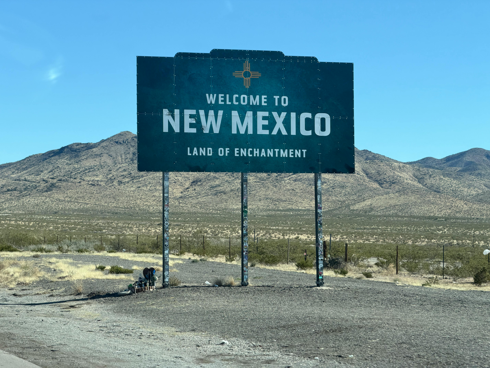

Traveling is one of the best ways to experience different cultures, foods, and landscapes. Whether it is a tropical beach or a historic city, every trip teaches you something new.
Over the years I have had the chance to visit some incredible places. Below are a few destinations that left a lasting impression on me and why I would recommend them to anyone.
| Item | Why You Need It |
|---|---|
| Passport | Required for international travel |
| Travel Insurance | Covers unexpected cancellations or medical needs |
| Portable Charger | Keeps your devices powered on the go |
| Comfortable Shoes | Essential for long walking days |

Old Town Albuquerque is a great starting point for anyone visiting New Mexico. The history, food, and architecture make it a memorable stop.
Looking for inspiration? Visit Lonely Planet for travel guides, tips, and destination ideas from around the world.